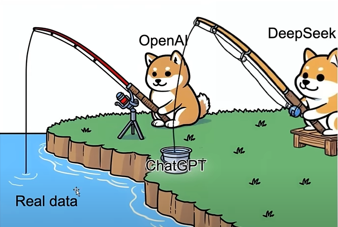
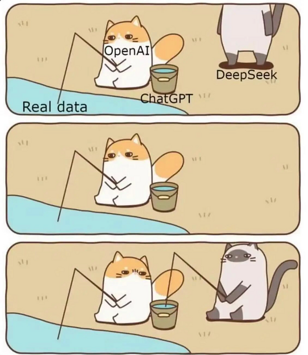

그게 왜 니 데이터야


그게 왜 니 데이터야
'AI 산업은 인류가 축적한 지식과 창작물을 기업 자산으로 옮기는 새로운 식민화'
명문이네 ㄷㄷ
소설책 학습해서 뭐하게 AI로 소설쓸때 참고나 하겠지
문체와 창의성까지 생산하는거지
니가 직접 말했네
소설책 학습해서 AI로 소설 쓸때 참고하는거지 ㅋㅋㅋ
넌 소설책이라도 학습해라
번역본까지 같이 있으면 비교해서 번역용 데이터로도 쓸 수 있잖냐..
언어모델이 언어학습하는게 당연한거 아니겠냐
ㄹㅇ 온갖 웹페이지에 봇보내서 글로벌 규모로 긴빠이치면서 저작권드립은 웃기긴함 ㅋㅋ
책 사서 스캔떠서 파기하면 물리적인 위치에서 디지털로 위치이동 시킨거라 저작권 문제도 없다는듯
real data 이러고 있다 ㅋ
근데 e북으로 올라간건 이미 다 학습되었을거 같은데
미국 코쟁이도 짱.개가 증류한다고 머라할게 못됨. 누가누굴.
저러다보면 나중엔 결국 지적 재산권이란게 희미해지지 않을까
우리껀데 이게 왜 니들꺼야 chatgpt씹새끼야
리얼데이터도 남들이 만든거자너 ㅋㅋ
그림체 베껴가던 놈들 이젠 문체 베껴가려고 떼잉
아니 재미나이 데이터는 안가져감?
재미나이가 왜 30TB 클라우드를 지원하겠니
학습용 데이터는 저작권 없이 막 가져가서 문제되지않겠나 싶긴했는데 워낙 나라에서 다 밀어주니깐 ai학습할떄 저작권에 대해선 다 입다물고 있음
저걸 회사이름으로 구매하니까 걸린거 아냐? 알바써서, 알바이름으로 구매를 했어야지 으이구 멍청한 놈들!
소설계도 끝이네
그런데 증류를 위해 자기 데이터도 던져야 되는데 그렇게해서 중국 국가기밀도 가져다 바쳤다는 소문이 돔.
deepseek는 저러면 돈은 어떻게 버는거야?
싸니까 유럽과 동남아에서 사용중
인간의 지식을 무단증류한 앤트로픽의 모델을 무단증류한 중국모델
대 긴빠이의 시대다